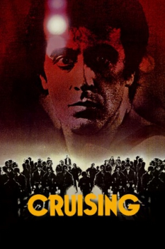

Country:Germany, 102 minutes
Spoken languages:English
Genres:Crime, Mystery, Thriller
Director(s):William Friedkin
Writer(s):William Friedkin, Gerald Walker
Video Codec:Unknown
Number: 2578


Certification:
Storyline:
A serial killer brutally slays and dismembers several gay men in New York's S&M and leather districts. The young police officer Steve Burns is sent undercover onto the streets as a decoy for the murderer. Working almost completely isolated from his department, he has to learn and practice the complex rules and signals of this little society.
Cast:


Medium: Original DVD,
Loaned: No
Aspect ratio: Unknown